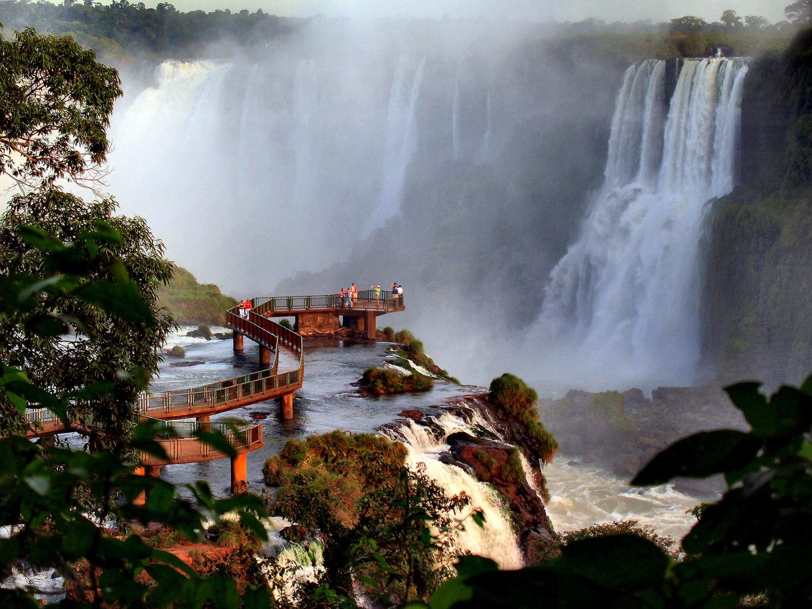
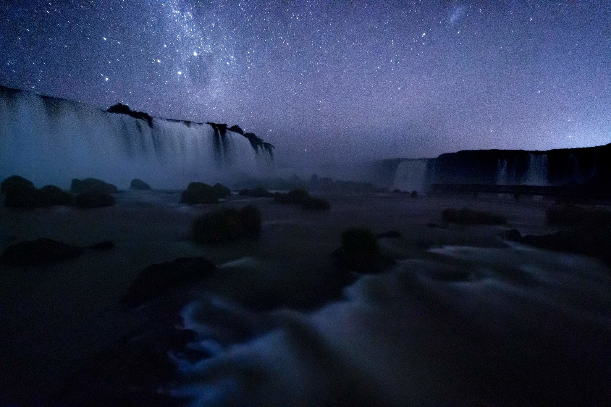
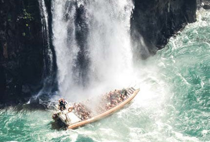
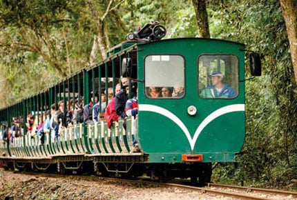
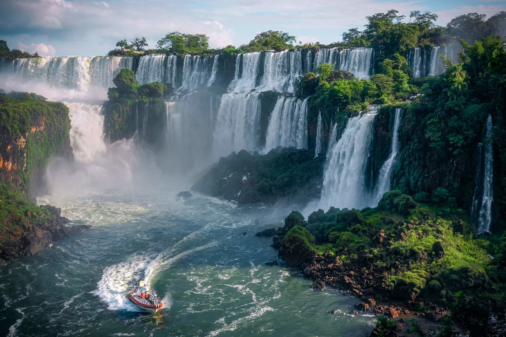

Las magníficas Cataratas del Iguazú, una de las Siete Maravillas del Mundo, están conformadas por 275 saltos de agua que caen desde las más diversas alturas. La más alta, de 80 metros, es conocida como la Garganta del Diablo.


Sobre Iguazu
Un contexto vegetal inigualable enmarca a uno de los paisajes naturales más opulentos del mundo: las Cataratas del Iguazú. Se trata de más de 2 km de cascadas que superan los 70 metros de altura, una manifestación espectacular de uno de los recursos cada vez más escasos del planeta: el agua.
Los saltos transcurren a lo largo de acantilados e islotes, repartidos en una media luna que forma este accidente geográfico. Los senderos se pueden recorrer a pie u optar por un pintoresco trencito de la selva, de combustión a gas, que parte desde el Centro del Visitante.
A las Cataratas se las puede conocer, básicamente, a través de dos circuitos: uno inferior y otro superior. Desde el inferior se llega a la base de los saltos, donde la fuerza del agua se transforma en rocío o vapor que moja a los concurrentes. La experiencia es única y vale la pena animarse a la aventura. Desde este circuito también se puede tomar un bote con destino a la isla San Martín.


Parque Nacional Iguazu
El Parque Nacional Iguazú es un área protegida que conserva uno de los sitios de mayor riqueza biológica de la Argentina.
Este ambiente es conocido popularmente con el nombre de Selva Misionera. Aquí se encuentra la mitad de las especies de aves registradas en el territorio argentino y la mayor diversidad de orquídeas del país, para citar sólo algunos ejemplos.
El parque fue creado en 1934 y constituye uno de los primeros de la Argentina. Además de su belleza escénica, tiene alto valor científico, ya que brinda el contexto para estudiar especies en peligro de extinción, como el yaguareté. El área es una “escuela” al aire libre donde niños y jóvenes pueden comprender las múltiples relaciones que existen entre los seres vivos. Además, el movimiento generado por el turismo es el principal propulsor del desarrollo económico de la región.

Historia de Iguazu
En el año 1542, mientras realizaba una travesía desde el océano Atlántico hasta Asunción del Paraguay el adelantado español Álvar Núñez Cabeza de Vaca divisó las sorprendentes cataratas del río Iguazú y las bautizó como «saltos de Santa María». El primer europeo en divisar estas cataratas fue el náufrago de la expedición de Juan Díaz de Solís, Alejo García en 1524, cuando cruzó por esa región en busca de la sierra de la plata. El nombre de « Saltos de Santa María », con el tiempo fue reemplazado por su antigua denominación guaraní Iguazú (antigua ortografía de Iguazú 'gran cantidad de agua', y guazú 'grande').
Por entonces la región era habitada por indígenas de la etnia mbyá-guaraní, quienes alrededor de 1609 comenzaron a vivir el proceso evangelizador protagonizado por los sacerdotes de la Compañía de Jesús, llamados jesuitas, quienes desarrollaron exitosamente en esta región de Latinoamérica un sistema de reducciones que llegó a contar con 30 pueblos distribuidos en las regiones del Tapé y La Guayrá (ubicados actualmente en el sur de Brasil, Paraguay y en Argentina, en toda la provincia argentina de Misiones y el norte de Corrientes). Fueron las misiones jesuíticas guaraníes.
En diciembre de 1881 Misiones se separó de Corrientes y en 1882 asumió el primer gobernador, Rudecindo Roca, quien dividió el territorio en cinco departamentos. Uno de sus comandantes, Francisco Cruz, llegó hasta la confluencia de los ríos Paraná e Iguazú transportando una comisión científica alemana que buscaba tierras para colonizar. Esta expedición era costeada por Ledesma (propietario de las tierras de Iguazú) y dirigida por el explorador Carlos Bossetti. Entre los expedicionarios se encontraba también Jordan Hummell, que años más tarde organizó el primer viaje de turismo a las cataratas del Iguazú. Así las cataratas son “descubiertas” nuevamente y volvieron a ser admiradas.
En 1902, el Ministerio del Interior de Argentina, encomendó al arquitecto paisajista Carlos Thays, realizar un estudio de las cataratas, que fue la base para la creación del parque nacional Iguazú, en 1934, que posee 67 620 hectáreas de selva misionera.